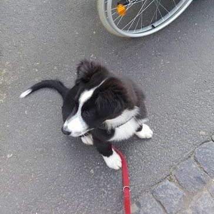

Aufbau der Ausbildung

Grundausbildung
...heißt Training vom Welpenalter an. Hier ist das Üben in und mit der Umwelt am Wichtigsten. Bevor er ein Assistenzhund werden kann, muss der junge Hund die "Standards" für die Öffentlichkeit erlernen. Neben einer umfangreichen Sozialisierung gehört hierzu zum Beispiel auch, dass das Lösen nur auf Grünflächen erwünscht ist. Zum Programm gehören also nicht nur Sitz und Platz, sondern auch das Fahren mit Bus und Bahn, das Kennenlernen verschiedener Untergründe, Städte und so weiter.

Spezialisierung
...ist, wenn es richtig losgeht: Die Grundausbildung ist abgeschlossen und die Gesundheitsuntersuchung abgeschlossen, nun geht es darum, wie der Hund seinem Menschen bei seinen Problemen helfen kann. Wir achten dabei auf ein kleinschrittiges Vorgehen, sodass das Tempo für Hund und Mensch passt und keiner aus dem Team beim Lernen überfordert wird.
Jeder Assistenzhund muss mindestens fünf Hilfeleistungen erbringen können - mehr Informationen darüber gibt es im neuen Assistenzhundegesetz, auf welches wir hier näher eingehen:
Unsere Angebote
Die Selbstausbildung
In der Selbstausbildung lebt der Hund von Anfang an bei Ihnen. Ich unterstütze Sie bei der Ausbildung Ihres Helfers, die Sie selbst durchführen.
Die Teilfremdausbildung
In der Teilfremdausbildung - der häufigsten Ausbildungsart - suche ich als Trainerin den Hund für Sie und teste die Welpen schon beim Züchter. Wenn ich einen geeigneten Assistenzhundeanwärter für Sie gefunden habe, dürfen Sie Ihren Hund, sobald er alt genug ist, beim Züchter abholen und zu mir bringen. Wohnen Sie in der Nähe, treffen wir uns wöchentlich zum Kennenlernen und Training. Wohnen Sie weiter weg, sprechen wir Termine oder Zeiträume ab, zu denen Sie Ihren Liebling bei mir besuchen. Die Welpenzeit ist einzigartig. Sie kommt nie wieder und ist besonders geeignet, um eine gute Bindung aufzubauen.
Die weiteren Schritte und das Trainingsvorgehen besprechen und planen wir dann gemeinsam. In der Regel sind Treffen regelmässig sinnvoll. In insgesamt 4 einstündigen Trainingseinheiten, welche auf 2-3 Tage aufgeteilt werden, lernen Sie den richtigen Umgang mit Ihrem Hund und üben die Signale, die ich ihm beibringe, wenn Sie weiter weg wohnen. Wenn Sie in der Nähe wohnen können Sie den Hund auch regelmässig für ein paar Stunden oder ein Wochenende mit nach Hause nehmen und dort weiter Bindung aufbauen und das Gelernte umsetzen.
Wann Ihr Hund zu Ihnen umziehen kann, ist individuell unterschiedlich. Nach dem Umzug folgt noch ungefähr eineinhalb Jahre Selbstausbildung, bei der ich Sie selbstverständlich begleite.